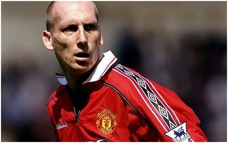
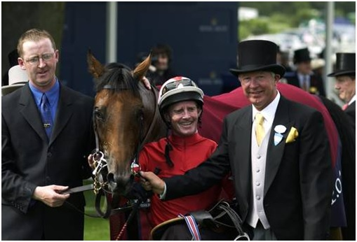

Chương 33

óng đá có thể đem lại niềm vui ngất ngây, nhưng áp lực từ nó đôi khi khiến người ta phải chết. Thời còn làm trợ lý tại ĐTQG Scotland, Alex Ferguson từng chứng kiến HLV trưởng Jock Stein, người thầy ông luôn yêu kính, vì quá căng thẳng mà đột tử ngay trên sân cỏ. Từ ấy, ông luôn tự nhủ với mình sẽ về hưu khi bước vào tuổi 60, không ở lại ham hố làm chi để rồi tổn thọ. Sau cú ăn ba năm 1999, quyết tâm giải nghệ của ông lại càng được củng cố: Đã giành được Cúp C1, chiếc cúp danh giá nhất trên cấp độ CLB, lại hoàn tất cả cú ăn ba, đâu còn mục tiêu nào cao hơn để chinh phục nữa? 60 bắt đầu lên lão, tội gì không giành thời gian vui thú tuổi già, tận hưởng cuộc sống? 2002 là năm Fergie lục tuần, cùng năm đó trận chung kết Cúp C1 sẽ được tổ chức tại Glasgow, quê hương ông. Cố gắng vô địch châu Âu thêm một lần tại quê nhà, sau đó nói lời chia tay, còn gì đẹp hơn thế?
Nghe Ferguson thông báo việc hưu trí, BLĐ United họp nhau bàn chuyện tương lai. Martin Edwards phản đối việc Fergie ở lại Old Trafford sau khi kết thúc hợp đồng, sợ rằng Manchester United lại dính phải “hội chứng Matt Busby” năm nào. Edwards có cái lý của mình, bởi các cầu thủ Thế Hệ Vàng từ nhỏ đến lớn không biết người thầy nào khác ngoài Sir Alex; nếu Sir ở lại, nhiều khả năng họ vẫn chỉ nghe lời ông, không thèm biết HLV kế nhiệm là ai. Peter Kenyon thì thuyết phục BLĐ mời Ferguson giữ vị trí đại sứ, chuyên đi đó đi đây quảng bá hình ảnh CLB, giống như vai trò của Sir Bobby Charlton. Tuy vậy, BLĐ chỉ chấp nhận trả cho đại sứ 100000 bảng đồng niên. Sir Alex coi mức lương đó là sự “sỉ nhục”, vì cùng lúc ấy, hãng giày Nike đang mời ông ký hợp đồng quảng cáo bốn năm, mỗi năm trả một triệu. Do bất đồng về mặt tài chính, đến tận tháng 5, 2001, hợp đồng hậu hưu trí của Sir vẫn chưa được ký kết.
Người hâm mộ hiển nhiên đứng về phía Sir Alex.Trong trận cuối cùng mùa giải 2000-2001 gặp Tottenham, họ hát vang câu “Chúng ta ai cũng yêu Alex Ferguson” suốt 40 phút liền. Hai hội CĐV lớn của Quỷ Đỏ, IMUSA và Shareholders United, mạnh mẽ lên án BLĐ về tội “vong ân bội nghĩa” đối với Sir. Trước sức ép bốn bề, BLĐ buộc phải soạn thảo hợp đồng mới, mời Ferguson làm đại sứ theo nhiệm kỳ năm năm, lương một triệu một năm, bằng với mức Nike đưa ra. Trong mùa cuối cùng ở vị trí HLV, 2001-2002, Sir sẽ nhận lương mới: 60000 bảng một tuần, vượt trên tất cả các học trò.
Tân GĐĐH Peter Kenyon là người phóng khoáng, không ky bo như Martin Edwards. Dưới thời ông, United chi tiêu đúng kiểu đại gia. Không những giúp Ferguson có được hợp đồng hậu hĩnh, Kenyon luôn sẵn sàng dốc túi mua về ngôi sao. Sau khi bình phục chấn thương, Ruud Van Nistelrooy đến Old Trafford với giá 19 triệu bảng.Ít lâu sau, United phá kỷ lục chuyển nhượng Anh Quốc, bỏ ra đến 28.1 triệu cho tiền vệ người Argentina Juan Sebastian Veron. Giá "khủng" trên, cùng mức lương 80000/tuần của Veron, khiến Edwards phát sốt: Cầu thủ United đang lãnh lương cao nhất là Roy Keane chỉ có 52000, ngay Sir Alex cũng chỉ mới vừa được tăng lên 60000, nay trả cho Veron như thế, chắc chắn các trụ cột khác sẽ làm reo, rồi lương bổng tại CLB chẳng mấy chốc mà vượt tầm kiểm soát. Tuy nhiên, vì Edwards không còn thực quyền, lời phản đối của ông rơi vào hư không.
Tự nhắm không cạnh tranh nổi với Nistelrooy, Andy Cole chuyển sang Blackburn Rovers. Teddy Sheringham cũng biết phong độ tuyệt vời của mình mùa trước chỉ là "vũ khúc thiên nga" cuối cùng, không thể lặp lại, nên trở về Tottenham dưỡng già. Sang tháng 8, 2001, tưởng như United đã mua bán xong xuôi, thì tựa sét giữa trời quang, xảy ra scandal Jaap Stam. Báo Daily Mirror đăng những trích đoạn hồi ký của Stam, trong đó có một số chi tiết “vạch áo cho người xem lưng”. Chẳng hạn, Stam kể về việc Sir Alex đã tiếp cận trái phép để mua anh từ PSV Eindhoven, rồi chuyện Sir nổi giận trong giờ nghỉ, đá gãy cả bàn y tế, làm bắn tung bông băng, chai lọ, khiến cầu thủ sợ chết khiếp, ai ai cũng phải lấy tay che…chỗ kín, sợ miểng chai văng phải. Ngoài ra, Stam còn có ý kiến chỉ trích David Beckham, và chửi anh em Neville là "hai thằng l.".Đối với Ferguson, tiết lộ chuyện nội bộ ra trước bàn dân thiên hạ là đại tội, nên Stam chỉ còn một con đường ra đi.
Thật ra, “đầu têu” vụ Jaap Stam là Piers Morgan, tổng biên tập tờ Daily Mirror. Giữ vai sếp tổng, song Morgan không có được sự khách quan cần thiết, mà dùng phương tiện truyền thông trong tay mình như một công cụ để chống Manchester United. Nghe tin Stam đang viết sách, Morgan tìm tới, xin mua bản quyền đăng báo, hy vọng có thể chộp được mấy đoạn nào đó bất lợi cho United.Nếu đọc hồi ký của Stam từ đầu tới cuối, có thể thấy anh đánh giá rất cao Ferguson cũng như các đồng đội ở Old Trafford; phần tích cực trong sách chiếm đến chín, tiêu cực chỉ có một. Vậy nhưng, khi sách vào tay Morgan, ông ta chỉ chọn đăng lên những đoạn tiêu cực, tạo cảm giác Stam rất bất mãn với đội bóng. Ngay sau kỳ báo đầu tiên, đại diện của Stam gọi cho Morgan, đề nghị hủy hợp đồng. Ông tổng từ chối, đắc ý văng tục: “Con c…! Anh mày là fan của Arsenal. Stam sẽ phải bán xới khỏi Old Trafford, còn Arsenal sẽ vô địch năm nay.”

Siêu hậu vệ Jaap Stam (Ảnh: Telegraph.co.uk)
Morgan đã thành công: Jaap Stam bị bán sang Lazio với giá 15.3 triệu bảng. "Tôi chơi ở Old Trafford ba năm, và chơi rất tốt. Thế mà chỉ trong vòng hai tuần, chẳng ai còn cần tôi nữa", Stam chua chát, "Tại Anh chẳng còn CLB nào giỏi hơn United, nên tôi muốn đến một nước khác. Họ có sai lầm khi bán tôi hay không ư? Kể cũng khó nói, đó là quyết định của họ. Họ bán thì tôi đi, thế thôi".
Thất bại trong việc chiêu mộ Lilian Thuram và Bixente Lizarazu, Sir Alex chỉ có thể đưa về Laurent Blancđể thay thế Stam. Cựu thủ quân tuyển Pháp là người Sir hâm mộ từ lâu, nhưng nay đã gần 36, xoay trở chậm chạp. Hơn thế nữa, đá cạnh Blanc chỉ là những trung vệ trung bình khá như Mikael Silvestre, Wes Brown, hay John O’Shea, còn phía dưới anh là…một chú hề. Ban đầu, Ferguson bảo vệ quyết định bán Stam, bảo rằng anh bắt đầu xuống phong độ, lại không chịu làm gương, giúp đỡ các hậu vệ trẻ phát triển, nhưng dần dần, ông phải thừa nhận mình sai.
Với hàng thủ xập xệ, United khởi đầu mùa giải bằng trận thua 2-3 trước Fulham, sau đó hòa hai trận liên tiếp, sau ba vòng được vỏn vẹn hai điểm. Ngày 29 tháng 9, 2001, CĐV Quỷ Đỏ được chứng kiến một trong những trận đấu vĩ đại nhất lịch sử CLB: Sau khi bị Tottenham dẫn 3-0, United ngược dòng thắng lại 5-3. Tuy thế, sau chiến thắng đáng nhớ đó, đội tiếp tục thể hiện phong độ vô cùng thất thường, có lúc thắng hoành tráng: hạ Derby 5-0, Southampton 6-1, khi lại thua muối mặt: thúc thủ trước Bolton 1-2, West Ham 0-1. Trong trận cầu "đinh" thua Arsenal 1-3, Fabien Barthez tiếp tục “diễn trò”, biếu không cho Thierry Henry hai bàn. Đếnkỳ chuyển nhượng mùa đông, United tăng cường lực lượng bằng tiền đạo người Uruguay Diego Forlan, song Forlan gặp nhiều trở ngại trong việc thích nghi, chẳng đóng góp bao nhiêu, không giúp được đội thoát cảnh phập phù.
Nguyên nhân thất bại của United có nhiều. Ngoài hàng thủ ra, tân binh Veron cũng phải gánh trách nhiệm.Trị giá 28 triệu, Veron tất yếu không thể ngồi dự bị, nhưng nếu thế thì ai dự bị đây? Beckham, Giggs, Keane, hay Scholes đều là “khai quốc công thần”, và cả bốn đều đang chơi rất tốt. Để gỡ rối, Ferguson quyết định chuyển sang dùng đội hình 4-5-1, với Van Nistelrooy đá cắm, còn Paul Scholes dâng cao chơi như hộ công. Đội hình này phục vụ rất tốt cho Nistelrooy, giúp trung phong Hà Lan ghi bàn như máy. Trớ trêu thay, ngoài Nistelrooy ra, các cầu thủ còn lại không ai thích ứng với nó.Paul Scholes đặc biệt lúng túng, chơi ở vị trí cao hơn mà lại ghi bàn ít hẳn đi. Veron thì có vẻ không phù hợp với bóng đá xứ sương mù, lại không chịu học tiếng Anh để thích nghi, chỉ tỏa sáng vài trận đầu, sau đó lu mờ dần, trở thành tâm điểm cho dư luận chỉ trích.
Ferguson tìm mọi cách giúp Veron tránh khỏi áp lực. Khi bị phóng viên truy vấn về phong độ của cầu thủ Argentina, ông vặc:
-ĐM, cút đi, ông không nói nữa.Veron, ĐM, là cầu thủ giỏi. Chúng bay, ĐM, là một lũ ngu.
Ba câu văng tục đủ ba lần.Báo chí quả nhiên cắn câu.Hôm sau, thay vì công kích Veron, họ tập trung phân tích “ngôn ngữ” của Sir Alex. Song Sir chỉ phí công vô ích. Dù cố gắng cách mấy, ông không sao giúp Veron lấy lại được phong độ như thời ở Italy.
Nhìn nhận khách quan, chính Sir Alex cũng là một nhân tố khiến United lao đao. Biết thầy sẽ về hưu vào cuối mùa, các học trò trở nên hoang mang.Họ xuống tinh thần, không còn đoàn kết như trước; một số người bắt đầu “lo ra”.David Beckham và Roy Keane từ chối gia hạn hợp đồng cho đến khi biết được ai sẽ kế nhiệm Ferguson. Mikael Silvestre thậm chí dám càu nhàu công khai về việc hay phải ngồi dự bị. Được hỏi bộ không sợ thầy sao, chàng ta đáp: Sợ gì, năm sau tôi vẫn ở đây, còn ông ấy đi rồi.
Ấy thế mà ông thầy không đi! Tuy đã tuyên bố dứt khoát: "Chắc chắn tôi sẽ nghỉ, không như các ca sỹ bày trò tái xuất này nọ đâu", ngày chia tay càng đến gần, Ferguson càng lưỡng lự, suy nghĩ đắn đo: Ừ thì sức khỏe là trên hết, nhưng mình vẫn còn sung sức, không bệnh không tật, có gì phải lo? Bobby Robson hơn mình đến chín tuổi mà vẫn còn huấn luyện đấy thôi; dạo này lão lại cứ bảo: "Anh cấm chú từ chức", rồi khuyên mình nghĩ lại. Hơn nữa,Manchester United đã trở thành một phần máu thịt của mình, sao nỡ bỏ đội cho đành?Về hưu thì biết làm gì?Xem đua ngựa, đọc sách, chơi đàn ư? Cũng hay đấy, nhưng thiếu bóng đá làm sao chịu nổi?
Mọi lý lẽ đều bảo nên ở lại, Ferguson chỉ còn ngần ngại một điều: Suốt bao năm, ông toàn lo banh bóng, ít giành thời gian cho gia đình, nay đã già mà còn ham, không biết gia đình có ủng hộ hay không. Thật may, đúng ngày Giáng Sinh 2001, khi Fergie đang ngồi xem TV, bà Cathy, vợ ông, và các con cùng bước vào.
-Em và con vừa bàn chuyện với nhau, và nhất trí anh chưa nên nghỉ hưu - Cathy nói - Thứ nhất: Sức khỏe anh vẫn tốt. Thứ hai: Đừng suốt ngày ở nhà quẩn chân em. Thứ ba: Anh vẫn còn trẻ chán.
-Nhưng anh đã thông báo cho CLB rồi, làm sao thay đổi được?
-Thì họ cũng phải tôn trọng anh, cho phép anh đổi ý chứ!
Thế là Sir Alex gọi cho giám đốc Maurice Watkins, thông báo quyết định ở lại.Hên cho Sir, bởi chỉ chậm một chút, BLĐ United đã công bố người thay thế ông. Dư luận đồn đãi nhiều cái tên vào vị trí kế vị Ferguson, như Martin O'Neill, Fabio Capello, thậm chí cả Roy Keane, nhưng người thật sự được tiếp cận là đương kim HLV ĐTQG Anh: Sven Goran Eriksson. Hai bên đạt được thỏa thuận, và United đang chuẩn bị gửi phái viên đến đàm phán với LĐBĐ Anh. Nếu Ferguson gọi cho Watkins chậm một ngày, phái viên đã lên đường."Suýt nữa tôi mắc sai lầm lớn", Fergie nói, "Họ mà chọn người khác rồi thì làm sao? Chẳng lẽ chạy vào hô: Tôi đổi ý, tôi đổi ý à?"
Từ khi nhậm chức năm 2000, GĐĐH Peter Kenyon luôn tìm cách thuyết phục Sir Alex ở lại. Nay nhận tin từ Sir, ông mừng như bắt được vàng. BLĐ United tổ chức họp báo, bá cáo rộng rãi tin vui. CĐV cũng hân hoan, phấn khởi, hát vang trên khán đài: “Chúng ta ai cũng yêu…Cathy Ferguson”. Chỉ vài ngày sau, Keane và Beckham đều đặt bút ký tên vào hợp đồng mới. "Tôi mừng hết lớn. Cầu thủ ai cũng mừng", Beckham thổ lộ, "Chúng tôi nghe đồn thầy sẽ ở lại từ lâu, nhưng khi chính miệng thầy nói ra, mới dám tin là sự thật. Nghe nói vợ thầy đã thuyết phục thầy. Thế ra gia đình nào cũng vậy, toàn người vợ nắm quyền quyết định!"
Trật tự được tái thiết, United lên như diều, đá 15 trận còn lại thắng đến 13, nhưng không bù đắp nổi cho phong độ thấp trước đó, đành để mất chức vô địch Ngoại Hạng. Giữa thất bại của toàn đội, một số cá nhân vẫn tỏa sáng, điển hình là Ruud Van Nistelrooy. Ngay năm đầu chơi cho CLB mới, tiền đạo Hà Lan thể hiện khả năng thích nghi cao đến kinh ngạc, ghi 36 bàn thắng, giành phần thưởng Cầu Thủ Xuất Sắc Nhất Nước Anh của PFA. Rất nhiều bàn của Nistelrooy được ghi bằng đánh đầu, từ những đường tạt chuẩn xác của Beckham. Không những xuất sắc trong vai kiến tạo, Beckham còn đích thân lập công đến 16 lần. Solskjaer thì vẫn xứng danh siêu dự bị, đứng thứ hai trong danh sách phá lưới với 25 bàn. Tuy vậy, các tiền đạo khác lại gây thất vọng lớn. Tổng số bàn thắng của Dwight Yorke và Diego Forlan cộng lại chỉ bằng…một. Vả lại, dù cả bốn tiền đạo đồng thời tỏa sáng, công cũng chưa chắc bù nổi cho thủ. Mùa trước, United để lọt có 31 bàn tại giải VĐQG; mùa này, họ thua đến 45, không những nhìn Arsenal vô địch, mà lần đầu tiên kể từ năm 1991, phải rớt xuống vị trí thứ ba.
Trên đấu trường Champions League, giấc mộng Glasgow cũng tan vỡ. United thắng Deportivo La Coruna trong cả hai lượt tứ kết, đứng trước cơ hội giành lại ngôi vương, bởi đối thủ tiếp theo chỉ là Bayer Leverkusen. Đáng tiếc, cũng như năm 1997, đội bị loại bởi kẻ dưới cơ. Để Bayer cầm hòa 2-2 tại Old Trafford, Quỷ Đỏ đánh mất lợi thế. Trong trận lượt về trên đất Đức, Roy Keane nhen tia hy vọng với bàn mở tỷ số, trước khi Neuville gỡ hòa cho Leverkusen vào cuối hiệp một. Forlan có cơ hội ngàn vàng trong những phút cuối cùng, song cú volley của anh bị hậu vệ đối phương phá trước vạch vôi.
Mùa bóng kết thúc, Dwight Yorke nhận ra mình không còn tương lai ở Old Trafford, chấp nhận sang Blackburn Rovers hội ngộ cùng Cole. Denis Irwin cũng nói lời chia tay, sau 12 năm gắn bó và 529 lần khoác áo CLB. Ngợi ca Irwin là một tấm gương kiểu mẫu cho các cầu thủ trẻ noi theo, Ferguson trao băng thủ quân cho hậu vệ người Ireland trong trận cuối cùng anh chơi cho United.
Năm 2002, Ferguson chỉ giành được danh hiệu trong môn…đua ngựa. Nguyên là vì đam mê đua ngựa, môn giải trí quý tộc ở Anh, Fergie có dịp làm quen với những nhân vật máu mặt, trong đó có hai tay tài phiệt người Ireland: John Magnier và JP McManus. Magnier giới thiệu cho Sir Alex chú ngựa đua hai tuổi mang tên “Rock of Gibraltar” (gọi tắt là The Rock). Sir trở thành đồng chủ nhân ngựa ấy, chủ còn lại chính là vợ của Magnier. Trước đây, Ferguson cũng từng sở hữu ngựa đua, nhưng ngựa ông so với The Rock cũng như cầu thủ xứ Lào đứng cạnh Ronaldinho. The Rock thắng hết giải này đến giải khác, được bầu là Tuấn Mã Xuất Sắc Nhất Châu Âu, còn Fergie được trao phần thưởng Chủ Ngựa Của Năm.
Từ đối tác đua ngựa dẫn đến đối tác túc cầu, Magnier và McManus dần quan tâm đến Manchester United, đầu tư vào United plc, trở nên cổ đông lớn thứ hai của công ty. Vậy là vị thế Ferguson bỗng lên cao chót vót. BLĐ CLB nhìn Fergie lấm lét, bởi ông nay là bạn chí thân của hai sếp lớn, không đơn thuần chỉ là một HLV dưới quyền họ. Đâu đó còn lan truyền tin đồn: Hai sếp sẽ mua hẳn United plc, rồi bổ nhiệm Sir Alex làm GĐĐH.

Sir Alex Ferguson bên ngựa đua The Rock (Ảnh: Independent.ie)